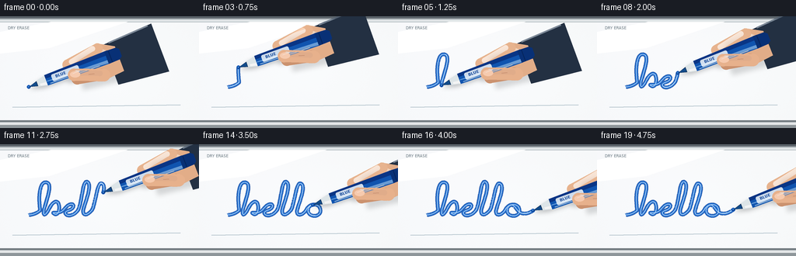
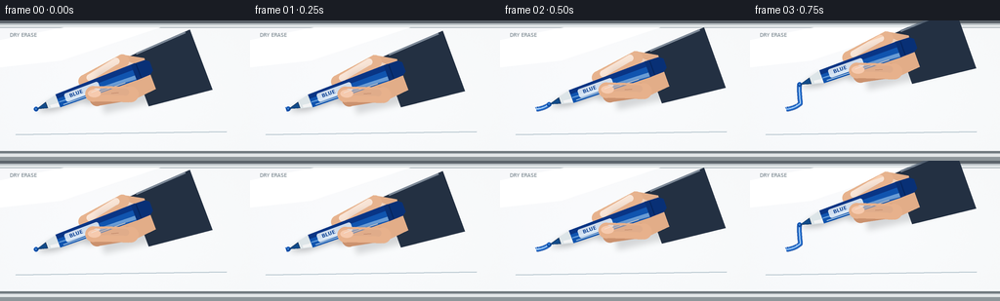

CODING AGENTS AS PIXEL WORLD MODELS
traex/GPT-5.6-Sol · phygen_032
点击播放 · 原生 RGB 像素
逐轮保存的候选
回放视频、检查图与代码变化。
每份候选均可单独播放。实际图片检查记录在下方工具轨迹中。
候选 01播放与检查图
点击播放 · 原生 RGB 像素


展开代码变化
--- 上一保存版本
+++ 本次保存版本
@@ -0,0 +1,254 @@
+from pathlib import Path
+import math
+import numpy as np
+from PIL import Image, ImageDraw, ImageFilter, ImageFont
+import artifact_io
+
+# Deterministic, fully procedural macro shot of a marker writing on a whiteboard.
+W, H, N, S = 256, 144, 20, 4
+SW, SH = W*S, H*S
+rng = np.random.default_rng(3201)
+
+
+def bezier(p0, p1, p2, p3, n=36):
+ t = np.linspace(0, 1, n, endpoint=False)[:, None]
+ return ((1-t)**3*p0 + 3*(1-t)**2*t*p1 + 3*(1-t)*t**2*p2 + t**3*p3)
+
+# A single unbroken, cursive "hello" stroke. An unbroken path makes the visible
+# nib/surface interaction physically unambiguous throughout the shot.
+curves = [
+ ((37,91),(43,91),(48,88),(52,85)),
+ ((52,85),(49,69),(51,50),(58,49)),
+ ((58,49),(68,48),(62,66),(57,82)),
+ ((57,82),(54,93),(58,93),(63,84)),
+ ((63,84),(70,69),(77,72),(76,84)),
+ ((76,84),(75,91),(71,92),(68,88)),
+ ((68,88),(77,89),(81,86),(84,82)),
+ ((84,82),(90,75),(96,76),(94,81)),
+ ((94,81),(92,86),(83,85),(84,89)),
+ ((84,89),(86,94),(96,92),(101,84)),
+ ((101,84),(106,71),(106,51),(111,48)),
+ ((111,48),(119,49),(112,69),(108,81)),
+ ((108,81),(104,92),(111,94),(119,84)),
+ ((119,84),(124,70),(125,52),(130,50)),
+ ((130,50),(138,52),(131,69),(127,82)),
+ ((127,82),(123,92),(131,94),(138,85)),
+ ((138,85),(141,77),(151,75),(155,81)),
+ ((155,81),(159,88),(153,94),(146,92)),
+ ((146,92),(138,90),(139,80),(146,78)),
+ ((146,78),(151,78),(153,88),(160,89)),
+ ((160,89),(166,90),(170,88),(176,84)),
+]
+parts=[]
+for i,c in enumerate(curves):
+ q=np.array(c,dtype=float)
+ b=bezier(*q,n=28)
+ if i: b=b[1:]
+ parts.append(b)
+path=np.vstack(parts)
+# arc length parameterization gives a naturally constant hand speed
+seg=np.sqrt(((path[1:]-path[:-1])**2).sum(1))
+cum=np.r_[0,np.cumsum(seg)]
+length=float(cum[-1])
+
+def sample_at(frac):
+ d=np.clip(frac,0,1)*length
+ j=min(np.searchsorted(cum,d),len(path)-1)
+ if j==0: return path[0].copy()
+ a=(d-cum[j-1])/max(cum[j]-cum[j-1],1e-9)
+ return path[j-1]*(1-a)+path[j]*a
+
+def partial_path(frac):
+ d=np.clip(frac,0,1)*length
+ j=min(np.searchsorted(cum,d),len(path)-1)
+ pts=path[:j].copy()
+ p=sample_at(frac)[None,:]
+ return np.vstack([pts,p]) if len(pts) else p
+
+def scpts(points):
+ return [tuple(np.asarray(p)*S) for p in points]
+
+def poly(draw, pts, fill):
+ draw.polygon(scpts(pts), fill=fill)
+
+def ellipse(draw, box, fill, outline=None, width=1):
+ draw.ellipse(tuple(int(v*S) for v in box), fill=fill, outline=outline, width=width*S)
+
+def line(draw, pts, fill, width, joint='curve'):
+ draw.line(scpts(pts), fill=fill, width=max(1,int(width*S)), joint=joint)
+
+# Clean whiteboard with soft studio reflections and subtle material texture.
+yy,xx=np.mgrid[0:SH,0:SW]
+xf=xx/S; yf=yy/S
+rad=np.sqrt(((xf-130)/190)**2+((yf-74)/120)**2)
+base=250.0-4.0*np.clip(rad,0,1)
+# cool reflection from upper left and a very slight warm falloff at bottom
+arr=np.empty((SH,SW,3),dtype=float)
+arr[...,0]=base + 1.2*np.exp(-((xf-65)/90)**2-((yf-22)/40)**2)
+arr[...,1]=base + 1.8
+arr[...,2]=base + 2.7 + 1.1*np.exp(-((xf-40)/110)**2)
+# low amplitude fixed texture, retaining an unmistakably smooth surface
+noise=rng.normal(0,0.55,(SH,SW))
+arr += noise[...,None]
+arr=np.clip(arr,0,255).astype(np.uint8)
+board=Image.fromarray(arr,'RGB').convert('RGBA')
+bd=ImageDraw.Draw(board,'RGBA')
+# aluminium upper rim and its reflected edge
+bd.rectangle((0,0,SW,3*S),fill=(93,101,108,255))
+bd.rectangle((0,3*S,SW,5*S),fill=(191,198,202,255))
+bd.rectangle((0,5*S,SW,7*S),fill=(235,239,240,255))
+bd.line((0,7*S,SW,7*S),fill=(178,187,191,135),width=S)
+# broad, barely visible wipe/reflection streaks
+bd.polygon([(0,20*S),(65*S,7*S),(164*S,7*S),(63*S,41*S),(0,48*S)],fill=(255,255,255,18))
+bd.line((16*S,117*S,232*S,114*S),fill=(171,188,198,15),width=S)
+# lower tray anchors the setting as a whiteboard
+bd.rectangle((0,134*S,SW,SH),fill=(184,191,195,255))
+bd.rectangle((0,134*S,SW,136*S),fill=(112,121,126,255))
+bd.rectangle((0,137*S,SW,140*S),fill=(228,231,232,255))
+bd.rectangle((0,140*S,SW,SH),fill=(142,150,154,255))
+# subtle corner marker on the board (not a floating caption)
+try:
+ font_small=ImageFont.truetype('/usr/share/fonts/truetype/dejavu/DejaVuSans.ttf',5*S)
+except Exception:
+ font_small=ImageFont.load_default()
+bd.text((10*S,12*S),'DRY ERASE',font=font_small,fill=(107,122,131,78))
+
+
+def capsule(draw,a,b,width,fill):
+ line(draw,[a,b],fill,width)
+ r=width/2
+ ellipse(draw,(a[0]-r,a[1]-r,a[0]+r,a[1]+r),fill)
+ ellipse(draw,(b[0]-r,b[1]-r,b[0]+r,b[1]+r),fill)
+
+def marker_points(tip,angle):
+ u=np.array([math.cos(angle),math.sin(angle)])
+ n=np.array([-u[1],u[0]])
+ return u,n
+
+def marker_shape(draw,tip,u,n,shadow=False):
+ off=np.array([1.5,2.5]) if shadow else np.array([0.,0.])
+ col=(42,47,51,75) if shadow else None
+ # felt nib, conical collar, and long cylindrical barrel
+ if shadow:
+ poly(draw,[tip+off,tip+u*17+n*5+off,tip+u*111+n*9+off,
+ tip+u*111-n*9+off,tip+u*17-n*5+off],col)
+ return
+ poly(draw,[tip, tip+u*13+n*3.8, tip+u*13-n*3.8],(18,51,91,255))
+ poly(draw,[tip+u*1,tip+u*11+n*2.6,tip+u*11-n*2.6],(18,75,138,255))
+ poly(draw,[tip+u*12+n*4,tip+u*25+n*7,tip+u*25-n*7,tip+u*12-n*4],(221,229,232,255))
+ poly(draw,[tip+u*15+n*3.8,tip+u*25+n*6,tip+u*25+n*2.2,tip+u*15+n*1.2],(255,255,255,205))
+ # body, shaded into distinct bands to suggest cylindrical curvature
+ poly(draw,[tip+u*24+n*7,tip+u*108+n*8.5,tip+u*111-n*8.5,tip+u*24-n*7],(16,84,175,255))
+ poly(draw,[tip+u*24-n*7,tip+u*111-n*8.5,tip+u*111-n*2.7,tip+u*24-n*2.4],(9,53,133,255))
+ poly(draw,[tip+u*24+n*2,tip+u*108+n*7.7,tip+u*108+n*3.5,tip+u*25+n*1],(74,144,221,205))
+ line(draw,[tip+u*28+n*5.2,tip+u*95+n*6.7],(157,205,245,145),1.1)
+ # rear cap
+ poly(draw,[tip+u*107+n*8.5,tip+u*122+n*8,tip+u*126+n*5,
+ tip+u*126-n*5,tip+u*122-n*8,tip+u*107-n*8.5],(8,48,118,255))
+ line(draw,[tip+u*112-n*7.5,tip+u*112+n*7.8],(4,35,91,255),1.2)
+
+def draw_hand_back(layer,tip,u,n):
+ d=ImageDraw.Draw(layer,'RGBA')
+ g=tip+u*66
+ # navy sleeve entering frame from the right
+ wrist=g+u*43+n*10
+ poly(d,[wrist-n*27,wrist+u*67-n*31,wrist+u*67+n*35,wrist+n*28],(35,48,66,255))
+ line(d,[wrist+u*7-n*27,wrist+u*62-n*30],(74,90,110,180),2)
+ # palm silhouette and web of hand
+ palm=[g+u*8-n*18,g+u*35-n*22,g+u*56-n*10,g+u*56+n*24,
+ g+u*25+n*27,g-u*3+n*15]
+ poly(d,palm,(226,173,136,255))
+ # soft palm highlight
+ poly(d,[g+u*16-n*14,g+u*38-n*14,g+u*48-n*5,g+u*44+n*7,g+u*14+n*4],(245,196,159,155))
+ # index finger approaching the top of the barrel
+ capsule(d,g+u*34-n*15,g-u*9-n*9,13.5,(231,179,142,255))
+ capsule(d,g+u*28-n*17,g-u*3-n*11,7,(249,203,169,115))
+ # rear middle finger visible below
+ capsule(d,g+u*27+n*18,g-u*4+n*12,15,(203,146,111,255))
+
+def draw_front_fingers(layer,tip,u,n):
+ d=ImageDraw.Draw(layer,'RGBA')
+ g=tip+u*67
+ # thumb crosses the lower face of the blue barrel
+ capsule(d,g+u*29+n*20,g-u*7+n*6,16,(231,177,140,255))
+ capsule(d,g+u*25+n*16,g-u*3+n*5,7,(248,202,169,120))
+ # thumbnail with a specular ridge
+ c=g-u*5+n*6
+ ellipse(d,(c[0]-7,c[1]-4,c[0]+6,c[1]+4),(246,202,174,255))
+ line(d,[c-u*3-n*2,c+u*4-n*2],(255,228,207,170),0.8)
+ # crease where thumb presses into marker
+ line(d,[g+u*11+n*12,g+u*18+n*14],(167,111,86,115),0.8)
+
+def draw_rotated_label(layer,tip,u,angle):
+ # Tiny printed marker label, oriented with the barrel.
+ tile=Image.new('RGBA',(38*S,11*S),(0,0,0,0))
+ td=ImageDraw.Draw(tile)
+ try: f=ImageFont.truetype('/usr/share/fonts/truetype/dejavu/DejaVuSans-Bold.ttf',5*S)
+ except Exception: f=ImageFont.load_default()
+ td.rounded_rectangle((0,1*S,37*S,10*S),radius=2*S,fill=(238,245,249,220))
+ td.text((5*S,2*S),'BLUE',font=f,fill=(14,69,151,255),stroke_width=0)
+ rot=tile.rotate(-math.degrees(angle),resample=Image.Resampling.BICUBIC,expand=True)
+ c=(tip+u*51)*S
+ layer.alpha_composite(rot,(int(c[0]-rot.width/2),int(c[1]-rot.height/2)))
+
+frames=[]
+for fi in range(N):
+ # 0.4 sec anticipation; writing completes near 4.25 sec, followed by a hold.
+ raw=np.clip((fi-0.35)/16.25,0,1)
+ # cubic ease at beginning/end but almost linear through the actual handwriting
+ frac=raw*raw*(3-2*raw)
+ tip=sample_at(frac)
+ # minute natural hand movement only after completion
+ if fi>=18:
+ tip=tip+np.array([0.18*math.sin(fi*1.8),0.22*math.cos(fi*1.5)])
+ angle=-0.36 + 0.018*math.sin(fi*0.55)
+ u,n=marker_points(tip,angle)
+ frame=board.copy()
+
+ # Dry blue writing. Dark perimeter + blue core gives dense marker ink while
+ # slight translucency allows the glossy whiteboard to show through.
+ ink=Image.new('RGBA',(SW,SH),(0,0,0,0)); idr=ImageDraw.Draw(ink,'RGBA')
+ pp=partial_path(frac)
+ if len(pp)>1 and frac>0:
+ line(idr,pp,(8,66,158,210),5.0)
+ line(idr,pp,(18,102,205,245),3.45)
+ line(idr,pp,(66,148,235,105),1.15)
+ # glossy wet highlight on the newest section
+ recent=pp[-min(34,len(pp)):]
+ line(idr,recent-np.array([0,0.55]),(125,190,245,82),0.7)
+ # contact dot, exactly under the felt nib
+ ellipse(idr,(tip[0]-2.5,tip[1]-2.4,tip[0]+2.4,tip[1]+2.3),(13,82,183,245))
+ frame=Image.alpha_composite(frame,ink)
+
+ # Unified soft cast shadow from hand and pen on the board.
+ sh=Image.new('RGBA',(SW,SH),(0,0,0,0)); sd=ImageDraw.Draw(sh,'RGBA')
+ marker_shape(sd,tip,u,n,shadow=True)
+ g=tip+u*66
+ capsule(sd,g+u*25+np.array([2,4]),g-u*10+np.array([2,4]),20,(42,45,48,65))
+ poly(sd,[g+u*5-n*18+np.array([2,5]),g+u*65-n*15+np.array([2,5]),
+ g+u*70+n*32+np.array([2,5]),g-u*2+n*23+np.array([2,5])],(40,43,46,45))
+ sh=sh.filter(ImageFilter.GaussianBlur(3.0*S))
+ frame=Image.alpha_composite(frame,sh)
+
+ back=Image.new('RGBA',(SW,SH),(0,0,0,0)); draw_hand_back(back,tip,u,n)
+ frame=Image.alpha_composite(frame,back)
+ pen=Image.new('RGBA',(SW,SH),(0,0,0,0)); pd=ImageDraw.Draw(pen,'RGBA')
+ marker_shape(pd,tip,u,n,shadow=False)
+ draw_rotated_label(pen,tip,u,angle)
+ frame=Image.alpha_composite(frame,pen)
+ front=Image.new('RGBA',(SW,SH),(0,0,0,0)); draw_front_fingers(front,tip,u,n)
+ frame=Image.alpha_composite(frame,front)
+
+ # A tiny blue meniscus and compressed contact shadow establish actual touch.
+ contact=Image.new('RGBA',(SW,SH),(0,0,0,0)); cd=ImageDraw.Draw(contact,'RGBA')
+ ellipse(cd,(tip[0]-2.0,tip[1]-1.2,tip[0]+1.8,tip[1]+1.45),(8,46,104,120))
+ ellipse(cd,(tip[0]-1.2,tip[1]-1.0,tip[0]+0.8,tip[1]+0.5),(71,154,235,180))
+ frame=Image.alpha_composite(frame,contact)
+
+ out=frame.convert('RGB').resize((W,H),Image.Resampling.LANCZOS)
+ frames.append(np.asarray(out,dtype=np.uint8))
+
+frames=np.stack(frames,axis=0)
+assert frames.shape==(20,144,256,3) and frames.dtype==np.uint8
+artifact_io.save(frames,Path(__file__).resolve().parent)
+print('saved',frames.shape,frames.dtype,'range',frames.min(),frames.max())
可观测工具轨迹
实际执行的命令与返回图片。
命令 1exit 0
/bin/bash -lc "cat prompt.txt && printf '\\n--- GENERATION_RULES.md ---\\n' && cat GENERATION_RULES.md"
命令 2exit 0
/bin/bash -lc "cat task_spec.json && printf '\\n--- FILES ---\\n' && find . -maxdepth 2 -type f -printf '%p %s bytes\\n' | sort"
命令 3exit 0
/bin/bash -lc "command -v ffmpeg || true; command -v blender || true; command -v python3 || true; python3 - <<'PY' mods=['numpy','PIL','cv2','cairo','moderngl','scipy','imageio'] for m in mods: try: x=__import__(m); print(m,'OK',getattr(x,'__version__','')) except Exception as e: print(m,'NO',type(e).__name__) PY"
命令 4exit 0
/bin/bash -lc 'cat artifact_io.py'
命令 5exit 0
/bin/bash -lc "cat > generate.py <<'PY'
from pathlib import Path
import math
import numpy as np
from PIL import Image, ImageDraw, ImageFilter, ImageFont
import artifact_io
# Deterministic, fully procedural macro shot of a marker writing on a whiteboard.
W, H, N, S = 256, 144, 20, 4
SW, SH = W*S, H*S
rng = np.random.default_rng(3201)
def bezier(p0, p1, p2, p3, n=36):
t = np.linspace(0, 1, n, endpoint=False)[:, None]
return ((1-t)**3*p0 + 3*(1-t)**2*t*p1 + 3*(1-t)*t**2*p2 + t**3*p3)
# A single unbroken, cursive \"hello\" stroke. An unbroken path makes the visible
# nib/surface interaction physically unambiguous throughout the shot.
curves = [
((37,91),(43,91),(48,88),(52,85)),
((52,85),(49,69),(51,50),(58,49)),
((58,49),(68,48),(62,66),(57,82)),
((57,82),(54,93),(58,93),(63,84)),
((63,84),(70,69),(77,72),(76,84)),
((76,84),(75,91),(71,92),(68,88)),
((68,88),(77,89),(81,86),(84,82)),
((84,82),(90,75),(96,76),(94,81)),
((94,81),(92,86),(83,85),(84,89)),
((84,89),(86,94),(96,92),(101,84)),
((101,84),(106,71),(106,51),(111,48)),
((111,48),(119,49),(112,69),(108,81)),
((108,81),(104,92),(111,94),(119,84)),
((119,84),(124,70),(125,52),(130,50)),
((130,50),(138,52),(131,69),(127,82)),
((127,82),(123,92),(131,94),(138,85)),
((138,85),(141,77),(151,75),(155,81)),
((155,81),(159,88),(153,94),(146,92)),
((146,92),(138,90),(139,80),(146,78)),
((146,78),(151,78),(153,88),(160,89)),
((160,89),(166,90),(170,88),(176,84)),
]
parts=[]
for i,c in enumerate(curves):
q=np.array(c,dtype=float)
b=bezier(*q,n=28)
if i: b=b[1:]
parts.append(b)
path=np.vstack(parts)
# arc length parameterization gives a naturally constant hand speed
seg=np.sqrt(((path[1:]-path[:-1])**2).sum(1))
cum=np.r_[0,np.cumsum(seg)]
length=float(cum[-1])
def sample_at(frac):
d=np.clip(frac,0,1)*length
j=min(np.searchsorted(cum,d),len(path)-1)
if j==0: return path[0].copy()
a=(d-cum[j-1])/max(cum[j]-cum[j-1],1e-9)
return path[j-1]*(1-a)+path[j]*a
def partial_path(frac):
d=np.clip(frac,0,1)*length
j=min(np.searchsorted(cum,d),len(path)-1)
pts=path[:j].copy()
p=sample_at(frac)[None,:]
return np.vstack([pts,p]) if len(pts) else p
def scpts(points):
return [tuple(np.asarray(p)*S) for p in points]
def poly(draw, pts, fill):
draw.polygon(scpts(pts), fill=fill)
def ellipse(draw, box, fill, outline=None, width=1):
draw.ellipse(tuple(int(v*S) for v in box), fill=fill, outline=outline, width=width*S)
def line(draw, pts, fill, width, joint='curve'):
draw.line(scpts(pts), fill=fill, width=max(1,int(width*S)), joint=joint)
# Clean whiteboard with soft studio reflections and subtle material texture.
yy,xx=np.mgrid[0:SH,0:SW]
xf=xx/S; yf=yy/S
rad=np.sqrt(((xf-130)/190)**2+((yf-74)/120)**2)
base=250.0-4.0*np.clip(rad,0,1)
# cool reflection from upper left and a very slight warm falloff at bottom
arr=np.empty((SH,SW,3),dtype=float)
arr[...,0]=base + 1.2*np.exp(-((xf-65)/90)**2-((yf-22)/40)**2)
arr[...,1]=base + 1.8
arr[...,2]=base + 2.7 + 1.1*np.exp(-((xf-40)/110)**2)
# low amplitude fixed texture, retaining an unmistakably smooth surface
noise=rng.normal(0,0.55,(SH,SW))
arr += noise[...,None]
arr=np.clip(arr,0,255).astype(np.uint8)
board=Image.fromarray(arr,'RGB').convert('RGBA')
bd=ImageDraw.Draw(board,'RGBA')
# aluminium upper rim and its reflected edge
bd.rectangle((0,0,SW,3*S),fill=(93,101,108,255))
bd.rectangle((0,3*S,SW,5*S),fill=(191,198,202,255))
bd.rectangle((0,5*S,SW,7*S),fill=(235,239,240,255))
bd.line((0,7*S,SW,7*S),fill=(178,187,191,135),width=S)
# broad, barely visible wipe/reflection streaks
bd.polygon([(0,20*S),(65*S,7*S),(164*S,7*S),(63*S,41*S),(0,48*S)],fill=(255,255,255,18))
bd.line((16*S,117*S,232*S,114*S),fill=(171,188,198,15),width=S)
# lower tray anchors the setting as a whiteboard
bd.rectangle((0,134*S,SW,SH),fill=(184,191,195,255))
bd.rectangle((0,134*S,SW,136*S),fill=(112,121,126,255))
bd.rectangle((0,137*S,SW,140*S),fill=(228,231,232,255))
bd.rectangle((0,140*S,SW,SH),fill=(142,150,154,255))
# subtle corner marker on the board (not a floating caption)
try:
font_small=ImageFont.truetype('/usr/share/fonts/truetype/dejavu/DejaVuSans.ttf',5*S)
except Exception:
font_small=ImageFont.load_default()
bd.text((10*S,12*S),'DRY ERASE',font=font_small,fill=(107,122,131,78))
def capsule(draw,a,b,width,fill):
line(draw,[a,b],fill,width)
r=width/2
ellipse(draw,(a[0]-r,a[1]-r,a[0]+r,a[1]+r),fill)
ellipse(draw,(b[0]-r,b[1]-r,b[0]+r,b[1]+r),fill)
def marker_points(tip,angle):
u=np.array([math.cos(angle),math.sin(angle)])
n=np.array([-u[1],u[0]])
return u,n
def marker_shape(draw,tip,u,n,shadow=False):
off=np.array([1.5,2.5]) if shadow else np.array([0.,0.])
col=(42,47,51,75) if shadow else None
# felt nib, conical collar, and long cylindrical barrel
if shadow:
poly(draw,[tip+off,tip+u*17+n*5+off,tip+u*111+n*9+off,
tip+u*111-n*9+off,tip+u*17-n*5+off],col)
return
poly(draw,[tip, tip+u*13+n*3.8, tip+u*13-n*3.8],(18,51,91,255))
poly(draw,[tip+u*1,tip+u*11+n*2.6,tip+u*11-n*2.6],(18,75,138,255))
poly(draw,[tip+u*12+n*4,tip+u*25+n*7,tip+u*25-n*7,tip+u*12-n*4],(221,229,232,255))
poly(draw,[tip+u*15+n*3.8,tip+u*25+n*6,tip+u*25+n*2.2,tip+u*15+n*1.2],(255,255,255,205))
# body, shaded into distinct bands to suggest cylindrical curvature
poly(draw,[tip+u*24+n*7,tip+u*108+n*8.5,tip+u*111-n*8.5,tip+u*24-n*7],(16,84,175,255))
poly(draw,[tip+u*24-n*7,tip+u*111-n*8.5,tip+u*111-n*2.7,tip+u*24-n*2.4],(9,53,133,255))
poly(draw,[tip+u*24+n*2,tip+u*108+n*7.7,tip+u*108+n*3.5,tip+u*25+n*1],(74,144,221,205))
line(draw,[tip+u*28+n*5.2,tip+u*95+n*6.7],(157,205,245,145),1.1)
# rear cap
poly(draw,[tip+u*107+n*8.5,tip+u*122+n*8,tip+u*126+n*5,
tip+u*126-n*5,tip+u*122-n*8,tip+u*107-n*8.5],(8,48,118,255))
line(draw,[tip+u*112-n*7.5,tip+u*112+n*7.8],(4,35,91,255),1.2)
def draw_hand_back(layer,tip,u,n):
d=ImageDraw.Draw(layer,'RGBA')
g=tip+u*66
# navy sleeve entering frame from the right
wrist=g+u*43+n*10
poly(d,[wrist-n*27,wrist+u*67-n*31,wrist+u*67+n*35,wrist+n*28],(35,48,66,255))
line(d,[wrist+u*7-n*27,wrist+u*62-n*30],(74,90,110,180),2)
# palm silhouette and web of hand
palm=[g+u*8-n*18,g+u*35-n*22,g+u*56-n*10,g+u*56+n*24,
g+u*25+n*27,g-u*3+n*15]
poly(d,palm,(226,173,136,255))
# soft palm highlight
poly(d,[g+u*16-n*14,g+u*38-n*14,g+u*48-n*5,g+u*44+n*7,g+u*14+n*4],(245,196,159,155))
# index finger approaching the top of the barrel
capsule(d,g+u*34-n*15,g-u*9-n*9,13.5,(231,179,142,255))
capsule(d,g+u*28-n*17,g-u*3-n*11,7,(249,203,169,115))
# rear middle finger visible below
capsule(d,g+u*27+n*18,g-u*4+n*12,15,(203,146,111,255))
def draw_front_fingers(layer,tip,u,n):
d=ImageDraw.Draw(layer,'RGBA')
g=tip+u*67
# thumb crosses the lower face of the blue barrel
capsule(d,g+u*29+n*20,g-u*7+n*6,16,(231,177,140,255))
capsule(d,g+u*25+n*16,g-u*3+n*5,7,(248,202,169,120))
# thumbnail with a specular ridge
c=g-u*5+n*6
ellipse(d,(c[0]-7,c[1]-4,c[0]+6,c[1]+4),(246,202,174,255))
line(d,[c-u*3-n*2,c+u*4-n*2],(255,228,207,170),0.8)
# crease where thumb presses into marker
line(d,[g+u*11+n*12,g+u*18+n*14],(167,111,86,115),0.8)
def draw_rotated_label(layer,tip,u,angle):
# Tiny printed marker label, oriented with the barrel.
tile=Image.new('RGBA',(38*S,11*S),(0,0,0,0))
td=ImageDraw.Draw(tile)
try: f=ImageFont.truetype('/usr/share/fonts/truetype/dejavu/DejaVuSans-Bold.ttf',5*S)
except Exception: f=ImageFont.load_default()
td.rounded_rectangle((0,1*S,37*S,10*S),radius=2*S,fill=(238,245,249,220))
td.text((5*S,2*S),'BLUE',font=f,fill=(14,69,151,255),stroke_width=0)
rot=tile.rotate(-math.degrees(angle),resample=Image.Resampling.BICUBIC,expand=True)
c=(tip+u*51)*S
layer.alpha_composite(rot,(int(c[0]-rot.width/2),int(c[1]-rot.height/2)))
frames=[]
for fi in range(N):
# 0.4 sec anticipation; writing completes near 4.25 sec, followed by a hold.
raw=np.clip((fi-0.35)/16.25,0,1)
# cubic ease at beginning/end but almost linear through the actual handwriting
frac=raw*raw*(3-2*raw)
tip=sample_at(frac)
# minute natural hand movement only after completion
if fi>=18:
tip=tip+np.array([0.18*math.sin(fi*1.8),0.22*math.cos(fi*1.5)])
angle=-0.36 + 0.018*math.sin(fi*0.55)
u,n=marker_points(tip,angle)
frame=board.copy()
# Dry blue writing. Dark perimeter + blue core gives dense marker ink while
# slight translucency allows the glossy whiteboard to show through.
ink=Image.new('RGBA',(SW,SH),(0,0,0,0)); idr=ImageDraw.Draw(ink,'RGBA')
pp=partial_path(frac)
if len(pp)>1 and frac>0:
line(idr,pp,(8,66,158,210),5.0)
line(idr,pp,(18,102,205,245),3.45)
line(idr,pp,(66,148,235,105),1.15)
# glossy wet highlight on the newest section
recent=pp[-min(34,len(pp)):]
line(idr,recent-np.array([0,0.55]),(125,190,245,82),0.7)
# contact dot, exactly under the felt nib
ellipse(idr,(tip[0]-2.5,tip[1]-2.4,tip[0]+2.4,tip[1]+2.3),(13,82,183,245))
frame=Image.alpha_composite(frame,ink)
# Unified soft cast shadow from hand and pen on the board.
sh=Image.new('RGBA',(SW,SH),(0,0,0,0)); sd=ImageDraw.Draw(sh,'RGBA')
marker_shape(sd,tip,u,n,shadow=True)
g=tip+u*66
capsule(sd,g+u*25+np.array([2,4]),g-u*10+np.array([2,4]),20,(42,45,48,65))
poly(sd,[g+u*5-n*18+np.array([2,5]),g+u*65-n*15+np.array([2,5]),
g+u*70+n*32+np.array([2,5]),g-u*2+n*23+np.array([2,5])],(40,43,46,45))
sh=sh.filter(ImageFilter.GaussianBlur(3.0*S))
frame=Image.alpha_composite(frame,sh)
back=Image.new('RGBA',(SW,SH),(0,0,0,0)); draw_hand_back(back,tip,u,n)
frame=Image.alpha_composite(frame,back)
pen=Image.new('RGBA',(SW,SH),(0,0,0,0)); pd=ImageDraw.Draw(pen,'RGBA')
marker_shape(pd,tip,u,n,shadow=False)
draw_rotated_label(pen,tip,u,angle)
frame=Image.alpha_composite(frame,pen)
front=Image.new('RGBA',(SW,SH),(0,0,0,0)); draw_front_fingers(front,tip,u,n)
frame=Image.alpha_composite(frame,front)
# A tiny blue meniscus and compressed contact shadow establish actual touch.
contact=Image.new('RGBA',(SW,SH),(0,0,0,0)); cd=ImageDraw.Draw(contact,'RGBA')
ellipse(cd,(tip[0]-2.0,tip[1]-1.2,tip[0]+1.8,tip[1]+1.45),(8,46,104,120))
ellipse(cd,(tip[0]-1.2,tip[1]-1.0,tip[0]+0.8,tip[1]+0.5),(71,154,235,180))
frame=Image.alpha_composite(frame,contact)
out=frame.convert('RGB').resize((W,H),Image.Resampling.LANCZOS)
frames.append(np.asarray(out,dtype=np.uint8))
frames=np.stack(frames,axis=0)
assert frames.shape==(20,144,256,3) and frames.dtype==np.uint8
artifact_io.save(frames,Path(__file__).resolve().parent)
print('saved',frames.shape,frames.dtype,'range',frames.min(),frames.max())
PY
python3 generate.py"命令 6exit 0
/bin/bash -lc "python3 - <<'PY'
import numpy as np
from PIL import Image
z=np.load('pixels.npz')['pixels']
print('packed tensor:',z.shape,z.dtype)
# unpack and summarize blue-ink coverage in board writing region away from marker body
r=(z>>16)&255; g=(z>>8)&255; b=z&255
ink=(b>120)&(b>r*1.5)&(b>g*1.15)
for i in range(20):
print(f'{i:02d}: ink-ish pixels={ink[28:125,:,i].sum():4d}, frame_delta=' + ('-' if i==0 else str(np.count_nonzero(z[:,:,i]"'!=z[:,:,i-1]))))
print('"'files shape examples:',Image.open('frames/00.png').mode,Image.open('frames/00.png').size)
PY"命令 7exit 0
/bin/bash -lc 'command -v chafa || command -v viu || command -v jp2 || true'
命令 8exit 0
/bin/bash -lc 'ls -lh pixels.npz inspection.png transition_check.png index.html frames/00.png frames/10.png frames/19.png && python3 -m py_compile generate.py && git status --short 2>/dev/null || true'
保存候选 1 份；完成命令 8 次；可验证图片返回 0 张。原始 API 响应与完整日志保留在本地。